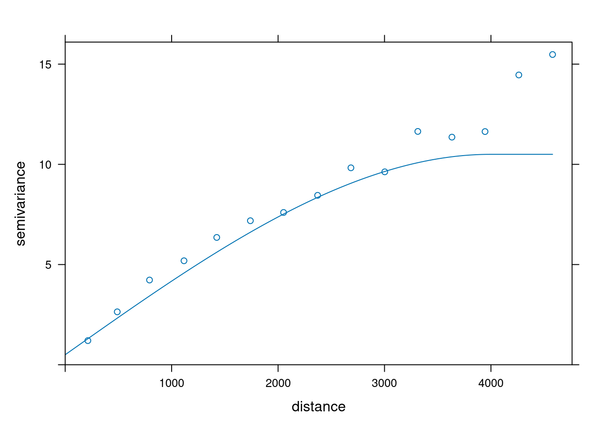
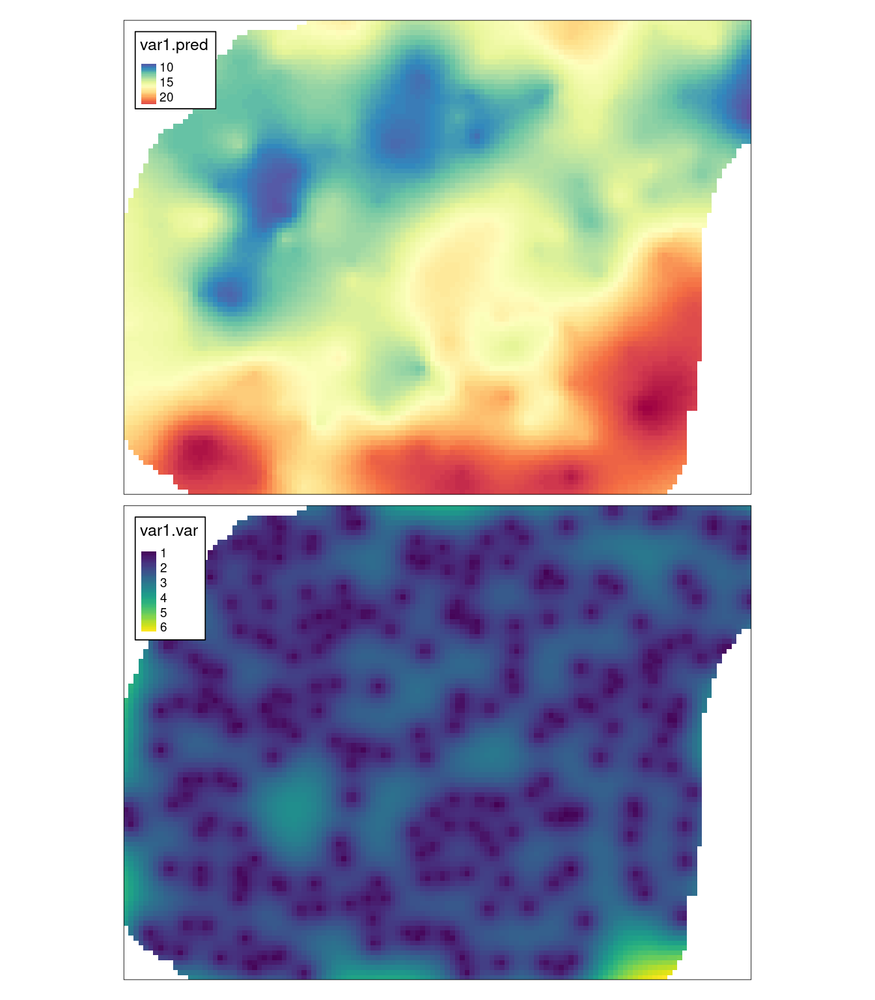
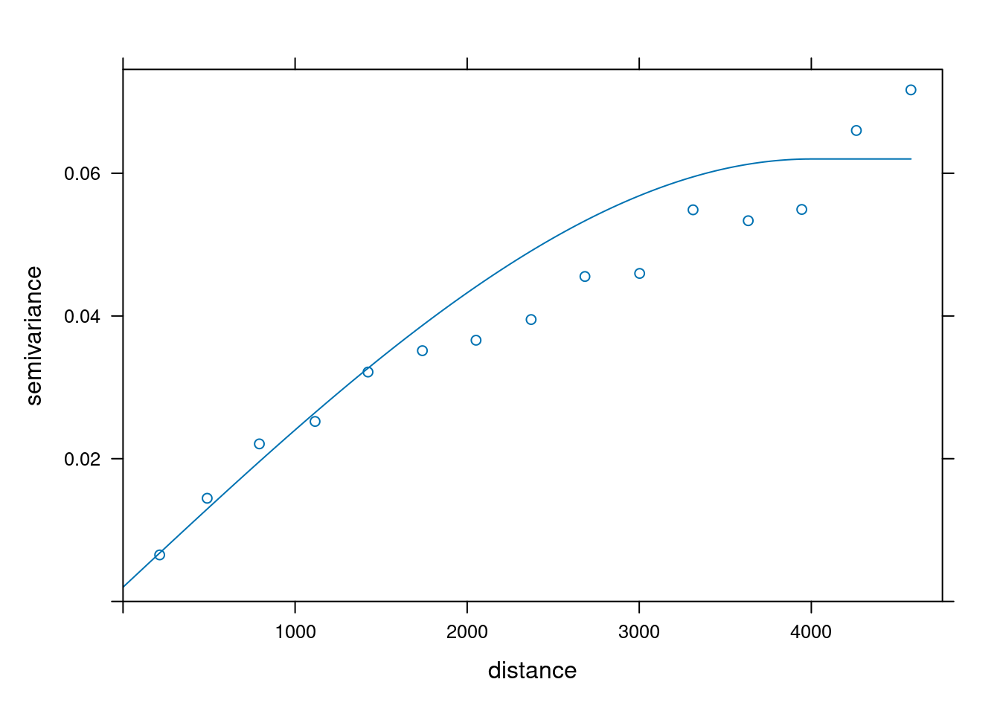
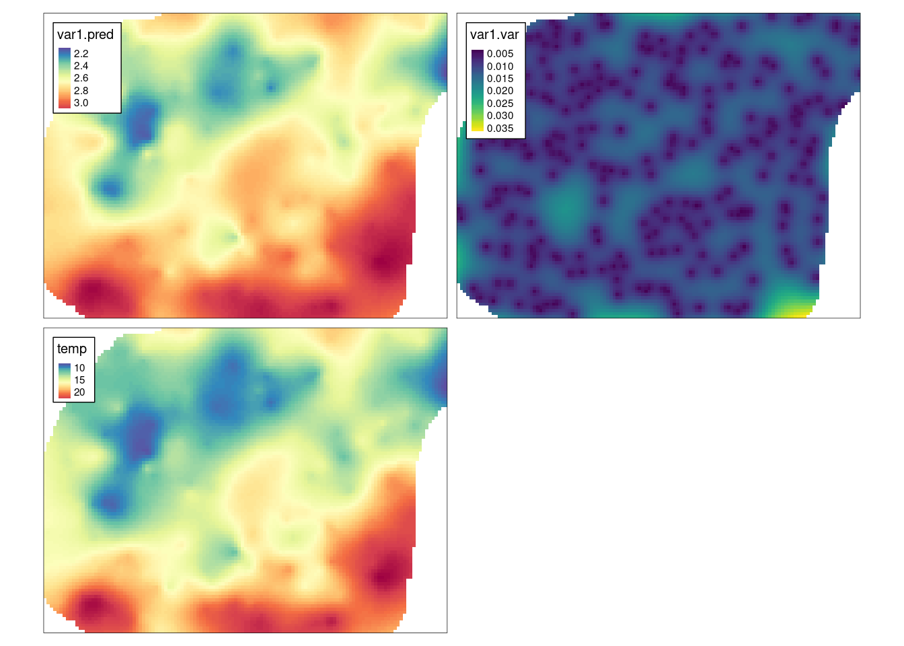
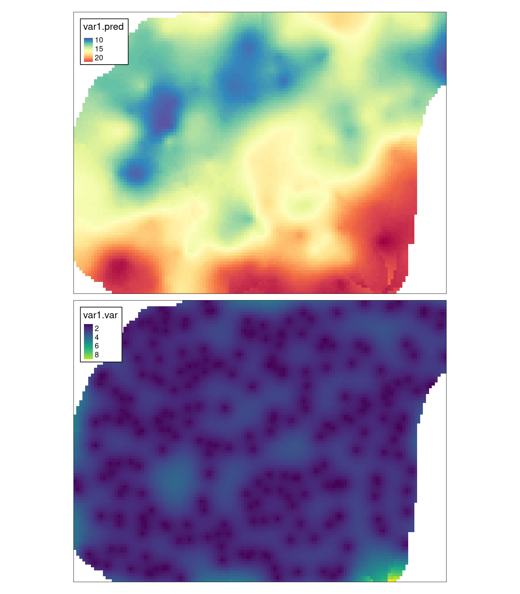
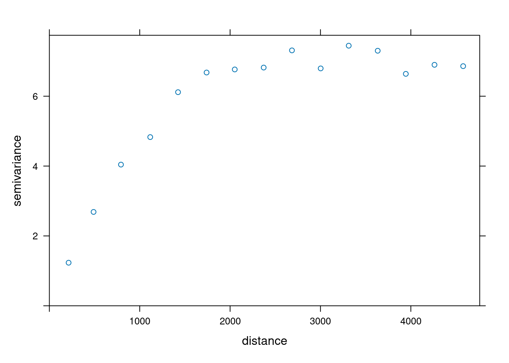
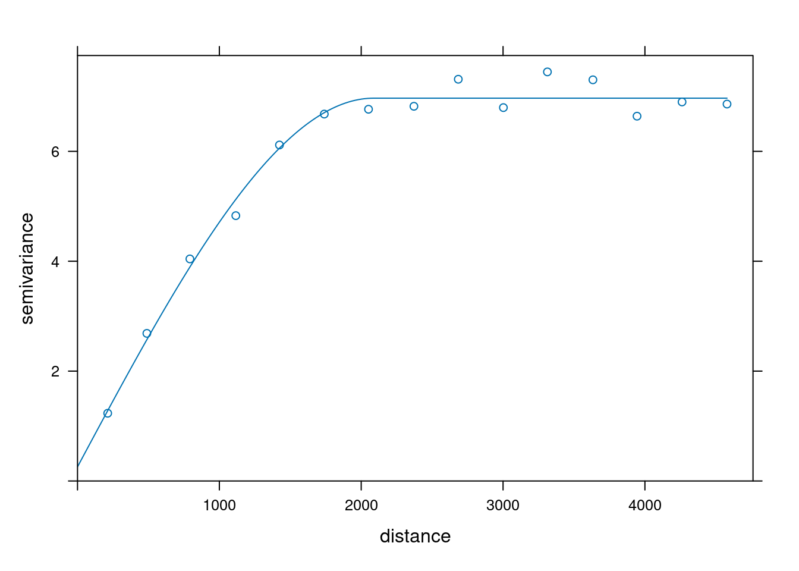
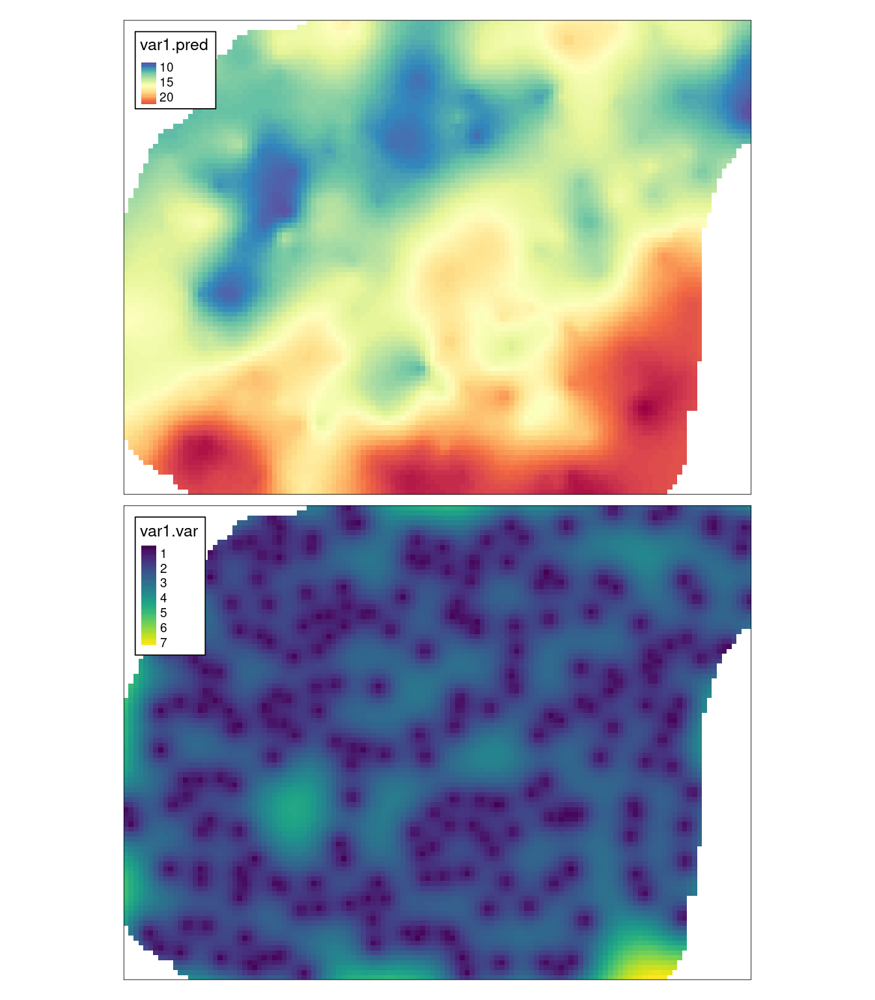
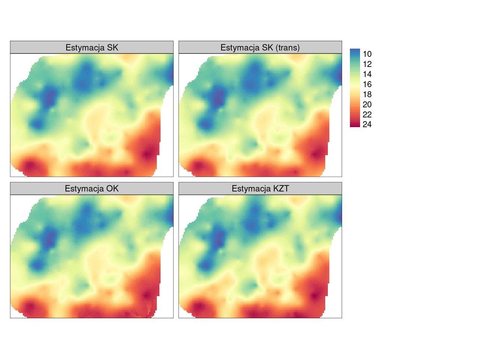

8 Estymacje jednozmienne
Odtworzenie obliczeń z tego rozdziału wymaga załączenia poniższych pakietów oraz wczytania poniższych danych:
library(sf)
library(stars)
library(gstat)
library(tmap)
library(geostatbook)
data(punkty)
data(siatka)8.1 Kriging
8.1.1 Interpolacja geostatystyczna
Kriging (interpolacja geostatystyczna) to grupa metod estymacji zaproponowana w latach 50. przez Daniego Krige. Główna zasada mówi, że prognoza w danej lokalizacji jest kombinacją obokległych obserwacji. Waga nadawana każdej z obserwacji jest zależna od stopnia (przestrzennej) korelacji - stąd też bierze się istotna rola semiwariogramów.
8.1.2 Metod krigingu
Istnieje szereg metod krigingu, w tym:
- Kriging prosty (ang. Simple kriging) (sekcja 8.2)
- Kriging zwykły (ang. Ordinary kriging) (sekcja 8.3)
- Kriging z trendem (ang. Kriging with a trend) (sekcja 8.4)
- Kriging stratyfikowany (ang. Kriging within strata – KWS)
- Kriging prosty ze zmiennymi średnimi lokalnymi (ang. Simple kriging with varying local means - SKlm) (sekcja 9.1)
- Kriging z zewnętrznym trendem/Uniwersalny kriging (ang.Kriging with an external trend/Universal kriging) (sekcja 9.2)
- Kokriging (ang. Co-kriging) (sekcja 10.1)
- Kriging danych kodowanych (ang. Indicator kriging) (sekcja 11.1)
- Inne
8.2 Kriging prosty
8.2.1 Kriging prosty (ang. Simple kriging)
Kriging prosty zakłada, że średnia jest znana i stała na całym obszarze. W poniższym przykładzie po stworzeniu semiwariogramu empirycznego, dopasowano model semiwariogramu składający się z funkcji sferycznej o zasięgu 4000 metrów i wartości nuggetu równej 0,5 (rycina 8.1).
vario = variogram(temp ~ 1, locations = punkty)
model = vgm(10, model = "Sph", range = 4000, nugget = 0.5)
model## model psill range
## 1 Nug 0.5 0
## 2 Sph 10.0 4000
plot(vario, model = model)
Rycina 8.1: Model złożony z modelu nuggetowego i sferycznego dla zmiennej temp.
# fitted = fit.variogram(vario, model)Następnie następuje estymacja wartości z użyciem metody krigingu prostego.
W funkcji krige() z pakietu gstat, użycie tej metody wymaga ustalenia średniej wartości cechy za pomocą argumentu beta.
mean(punkty$temp)## [1] 15.22251
sk = krige(temp ~ 1,
locations = punkty,
newdata = siatka,
model = model,
beta = 15)## [using simple kriging]Wynik krigingu prostego, jak i każdy inny uzyskany z użyciem pakietu gstat, można podejrzeć wpisując nazwę wynikowego obiektu.
Szczególnie ważne są dwie, nowe zmienne - var1.pred oraz var1.var.
Pierwsza z nich oznacza wartość estymowaną dla każdego oczka siatki, druga zaś mówi o wariancji estymacji.
sk## stars object with 2 dimensions and 2 attributes
## attribute(s):
## Min. 1st Qu. Median Mean 3rd Qu. Max. NA's
## var1.pred 8.473052 12.70587 14.961083 15.488215 17.711775 24.36355 1270
## var1.var 0.821095 1.61326 1.974793 2.041073 2.355011 6.26745 1270
## dimension(s):
## from to offset delta refsys x/y
## x 1 127 745542 90 ETRS89 / Poland CS92 [x]
## y 1 96 721256 -90 ETRS89 / Poland CS92 [y]Obie uzyskane zmienne można wyświetlić z użyciem pakietu tmap (rycina 8.2).
tm_shape(sk) +
tm_raster(col = c("var1.pred", "var1.var"),
style = "cont",
palette = list("-Spectral", "viridis")) +
tm_layout(legend.frame = TRUE)
Rycina 8.2: Estymacja i wariancja estymacji używając metody krigingu prostego (SK).
8.2.2 Kriging prosty po transformacji danych
Zarówno kriging prosty, jak i kolejne metody krigingowe opisane w tym skrypcie, mogą używać zmiennych wejściowych poddanych transformacjom, np. logaritmizacji (sekcja 3.6). Może to mieć na celu zniwelowanie skośności rozkładu i w efekcie uzyskanie pewniejszych wyników. Tutaj konieczne jest pamiętanie o kilku koniecznych krokach: (1) wykonaniu transformacji przy budowaniu semiwariogramu, (2) wykonaniu transformacji przy tworzeniu estymacji, oraz (3) zastosowaniu transformacji odwrotnej na uzyskanych wynikach. Zobaczmy to na poniższym przykładzie.
W pierwszym etapie budujemy i modelujemy semiwariogram, jednakże zamiast używać bezpośrednio wartości zmiennej temp poddajemy ją logaritmizacji poprzez log(temp).
vario_kp2 = variogram(log(temp) ~ 1, locations = punkty)
model_kp2 = vgm(0.06, model = "Sph", range = 4000, nugget = 0.002)
model_kp2## model psill range
## 1 Nug 0.002 0
## 2 Sph 0.060 4000
plot(vario_kp2, model = model_kp2)
Rycina 8.3: Model złożony z modelu nuggetowego i sferycznego dla zmiennej temp.
# fitted_kp2 = fit.variogram(vario_kp2, model_kp2)Następnie, musimy określić logarytm średniej wartości badanej zmiennej dla całego obszaru oraz użyć logarytmu tej zmiennej do stworzenia estymacji.
## [1] 2.689027## [using simple kriging]Wynik krigingu prostego zawiera dwie zmienne - var1.pred oraz var1.var.
Co warte podkreślenia, pierwsza z nich określa wartość estymowaną dla każdego oczka siatki w logarytmie badanej jednostki.
Przykładowo, gdy nasza zmienna określała temperaturę w stopniach Celsjusza, to wynik jest przestawiony w logarytmie stopni Celsjusza.
sk_kp2## stars object with 2 dimensions and 2 attributes
## attribute(s):
## Min. 1st Qu. Median Mean 3rd Qu. Max.
## var1.pred 2.116458867 2.532130644 2.70146692 2.70654657 2.86844059 3.19736223
## var1.var 0.003507856 0.008334475 0.01053523 0.01092072 0.01284403 0.03625981
## NA's
## var1.pred 1270
## var1.var 1270
## dimension(s):
## from to offset delta refsys x/y
## x 1 127 745542 90 ETRS89 / Poland CS92 [x]
## y 1 96 721256 -90 ETRS89 / Poland CS92 [y]W związku z tym, koniecznym ostatnim krokiem jest przywrócenie oryginalnej jednostki.
Możemy to zrobić używając funkcji rev_trans() z pakietu geostatbook (sekcja 3.6.4), która przyjmuje naszą zlogaritmizowaną estymację, wariancję estymacji i oryginalne wartości pomiarów w punktach.
sk_kp2$temp = rev_trans(sk_kp2$var1.pred, sk_kp2$var1.var, punkty$temp)
sk_kp2## stars object with 2 dimensions and 3 attributes
## attribute(s):
## Min. 1st Qu. Median Mean 3rd Qu.
## var1.pred 2.116458867 2.532130644 2.70146692 2.70654657 2.86844059
## var1.var 0.003507856 0.008334475 0.01053523 0.01092072 0.01284403
## temp 8.187681121 12.430871960 14.72626722 15.22250747 17.40643717
## Max. NA's
## var1.pred 3.19736223 1270
## var1.var 0.03625981 1270
## temp 24.10950341 1270
## dimension(s):
## from to offset delta refsys x/y
## x 1 127 745542 90 ETRS89 / Poland CS92 [x]
## y 1 96 721256 -90 ETRS89 / Poland CS92 [y]W efekcie otrzymujemy estymację w oryginalnych jednostkach - stopniach Celsjusza. Trzy uzyskane zmienne można wyświetlić z użyciem pakietu tmap (rycina 8.4).
tm_shape(sk_kp2) +
tm_raster(col = c("var1.pred", "var1.var", "temp"),
style = "cont",
palette = list("-Spectral", "viridis", "-Spectral")) +
tm_layout(legend.frame = TRUE)
Rycina 8.4: Estymacja logarytmu zmiennej temp, jej wariancja estymacji, oraz estymacja wartości tej zmiennej po przeprowadzeniu procesu transformacji odwrotnej.
8.3 Kriging zwykły
8.3.1 Kriging zwykły (ang. Ordinary kriging)
W krigingu zwykłym średnia traktowana jest jako wartość nieznana. Metoda ta uwzględnia lokalne fluktuacje średniej poprzez stosowanie ruchomego okna. Parametry ruchomego okna można określić za pomocą jednego z dwóch argumentów:
-
nmax- użyta zostanie określona liczba najbliższych obserwacji. -
maxdist- użyte zostaną jedynie obserwacje w zadanej odległości.
# ok = krige(temp ~ 1,
# locations = punkty,
# newdata = siatka,
# model = model,
# nmax = 30)
ok = krige(temp ~ 1,
locations = punkty,
newdata = siatka,
model = model,
maxdist = 1500)## [using ordinary kriging]Podobnie jak w przypadku krigingu prostego, można przyjrzeć się wynikom estymacji podając nazwę wynikowego obiektu oraz wyświetlić je używając funkcji tm_shape() and tm_raster() (rycina 8.5).
ok## stars object with 2 dimensions and 2 attributes
## attribute(s):
## Min. 1st Qu. Median Mean 3rd Qu. Max. NA's
## var1.pred 8.4763353 12.71717 14.967146 15.531098 17.70921 24.326622 1270
## var1.var 0.8215425 1.62057 1.990971 2.082008 2.39254 9.882173 1270
## dimension(s):
## from to offset delta refsys x/y
## x 1 127 745542 90 ETRS89 / Poland CS92 [x]
## y 1 96 721256 -90 ETRS89 / Poland CS92 [y]
tm_shape(ok) +
tm_raster(col = c("var1.pred", "var1.var"),
style = "cont",
palette = list("-Spectral", "viridis")) +
tm_layout(legend.frame = TRUE)
Rycina 8.5: Estymacja i wariancja estymacji używając metody krigingu zwykłego (OK).
8.4 Kriging z trendem
8.4.1 Kriging z trendem (ang. Kriging with a trend)
Kriging z trendem, określany również jako kriging z wewnętrznym trendem, do estymacji wykorzystuje (oprócz zmienności wartości wraz z odległością) położenie analizowanych punktów. W pierwszym kroku konieczne jest dodanie współrzędnych do używanego obiektu i do używanej siatki.
# dodanie współrzędnych do punktów
punkty$x = st_coordinates(punkty)[, 1]
punkty$y = st_coordinates(punkty)[, 2]
# dodanie współrzędnych do siatki
siatka$x = st_coordinates(siatka)[, 1]
siatka$y = st_coordinates(siatka)[, 2]Współrzędne dodawane są do całej (regularnej) siatki.
Możemy przyciąć je do badanego obszaru poprzez wpisanie wartości NA w miejscach poza naszym obszarem zainteresowań.
Następnie pierwszy z argumentów w funkcji variogram() musi przyjąć postać temp ~ x + y, co oznacza, że uwzględniamy liniowy trend zależny od współrzędnej x oraz y (rycina 8.6).

Rycina 8.6: Semiwariogram zmiennej temp uwzględniający współrzędne x i y.
Dalszym etapem jest dopasowanie modelu semiwariancji, a następnie wyliczenie estymowanych wartości z użyciem funkcji krige().
Należy tutaj pamiętać, aby wzór (w przykładzie temp ~ x + y) był taki sam podczas budowania semiwariogramu, jak i estymacji (rycina 8.7).
model_kzt = vgm(model = "Sph", nugget = 1)
fitted_kzt = fit.variogram(vario_kzt, model_kzt)
fitted_kzt## model psill range
## 1 Nug 0.2568762 0.000
## 2 Sph 6.7107464 2087.465
plot(vario_kzt, fitted_kzt)
Rycina 8.7: Model semiwariogramu zmiennej temp uwzględniający współrzędne x i y.
kzt = krige(temp ~ x + y,
locations = punkty,
newdata = siatka,
model = fitted_kzt)## [using universal kriging]Wyświetlenie wyników odbywa się używając pakietu tmap.
tm_shape(kzt) +
tm_raster(col = c("var1.pred", "var1.var"),
style = "cont",
palette = list("-Spectral", "viridis")) +
tm_layout(legend.frame = TRUE)
Rycina 8.8: Estymacja i wariancja estymacji używając metody krigingu z trendem (KZT).
8.5 Porównanie wyników SK, SK (trans), OK i KZT
Poniższe porównanie krigingu prostego (SK), krigingu prostego po zastosowaniu transformacji (SK trans), zwykłego (OK) i z trendem (KZT) wykazuje niewielkie różnice w uzyskanych wynikach (rycina 8.9).

Rycina 8.9: Porównanie wyników estymacji używając metody krigingu prostego (SK), krigingu zwykłego (OK) i krigingu z trendem (KZT).
W rozdziałach 10 oraz 9 pokazane będą uzyskane wyniki interpolacji temperatury powietrza korzystając z innych metod krigingu.
8.6 Zadania
Zadania w tym rozdziale są oparte o dane z obiektu punkty_pref.
Możesz go wczytać używając poniższego kodu:
data(punkty_pref)Na jego podstawie stwórz trzy obiekty - punkty_pref1 zawierający wszystkie punkty, punkty_pref2 zawierający losowe 100 punktów, oraz punkty_pref3 zawierający losowe 30 punktów.
set.seed(2018-11-25)
punkty_pref1 = punkty_pref
punkty_pref2 = punkty_pref[sample(nrow(punkty_pref), 100), ]
punkty_pref3 = punkty_pref[sample(nrow(punkty_pref), 30), ]- Zbuduj optymalne modele semiwariogramu zmiennej
srtmdla trzech zbiorów danych -punkty_pref1,punkty_pref2,punkty_pref3. Porównaj graficznie uzyskane modele. - W oparciu o uzyskane modele stwórz estymacje zmiennej
srtmdla trzech zbiorów danych -punkty_pref1,punkty_pref2,punkty_pref3używając krigingu prostego. Porównaj graficznie zarówno mapy estymacji jak i mapy wariancji. Opisz zaobserwowane różnice. - W oparciu o uzyskane modele stwórz estymacje zmiennej
srtmdla zbioru danychpunkty_pref3używając krigingu zwykłego. Sprawdź jak wygląda wynik estymacji uwzględniając (i) 10 najbliższych obserwacji, (ii) 30 najbliższych obserwacji, (iii) obserwacje w odległości do 2 km. - Używając krigingu z trendem, stwórz optymalne modele zmiennej
srtmdla dwóch zbiorów danych -punkty_pref1orazpunkty_pref3. - Porównaj graficznie zarówno mapy estymacji jak i mapy wariancji dla krigingu prostego, zwykłego oraz z trendem dla danych
punkty_pref3. Jakie można zauważyć podobieństwa a jakie różnice? - Dla zmiennej
tempz obiektupunkty_pref1stwórz mapę semiwariogramu. Czy ta zmienna wykazuje anizotropię przestrzenną? Jeżeli tak to stwórz semiwariogramy kierunkowe i ich modele, a następnie estymację zmiennejtemp.